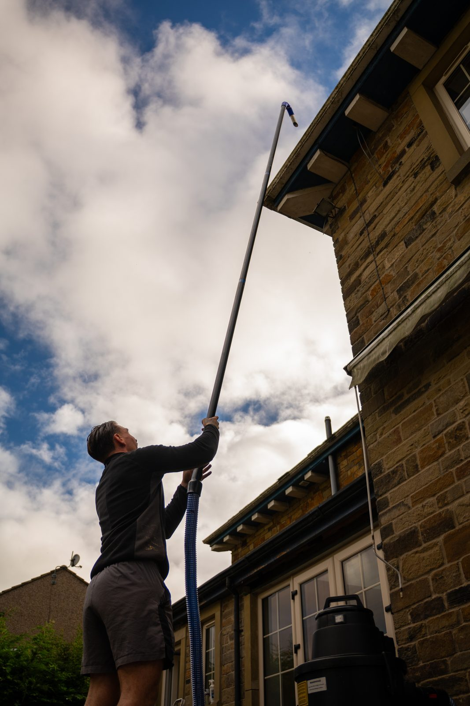
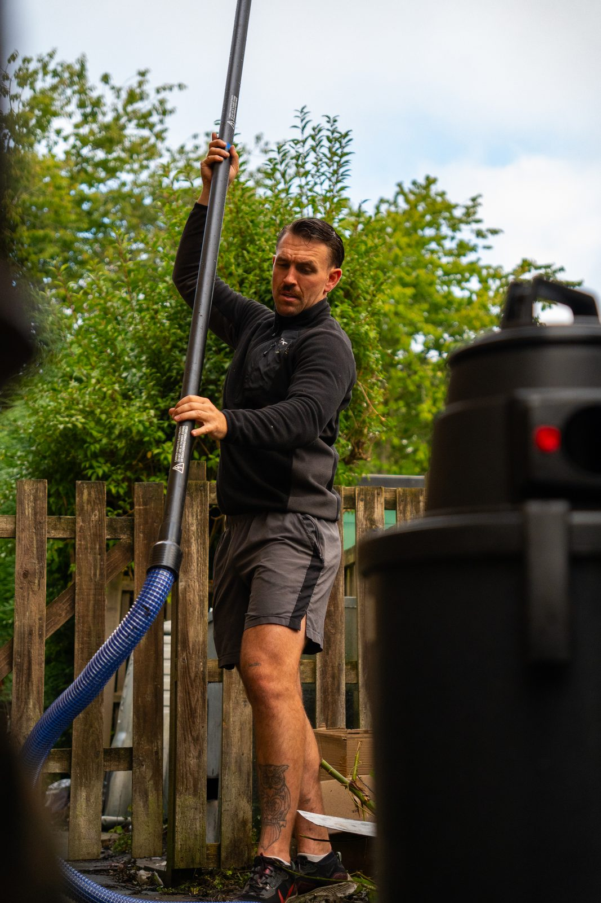
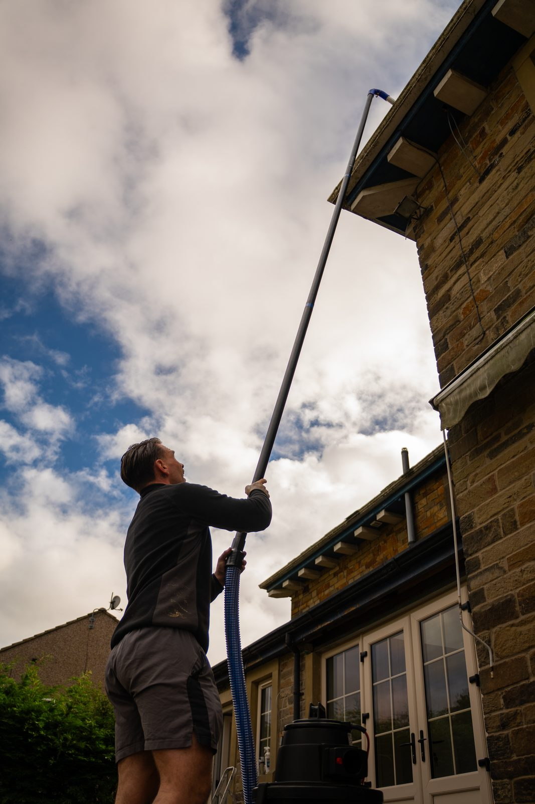
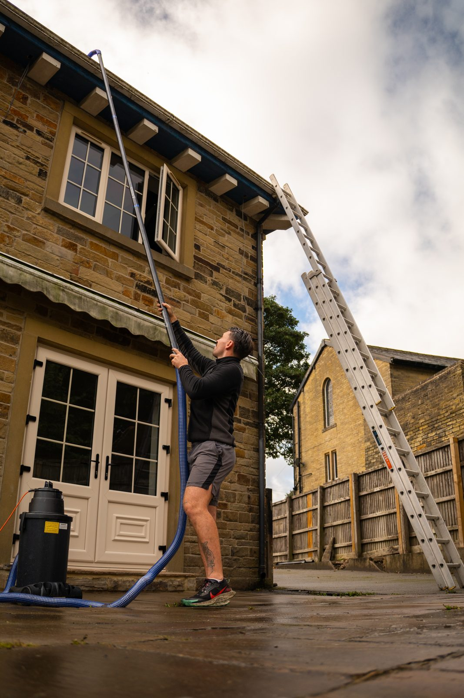
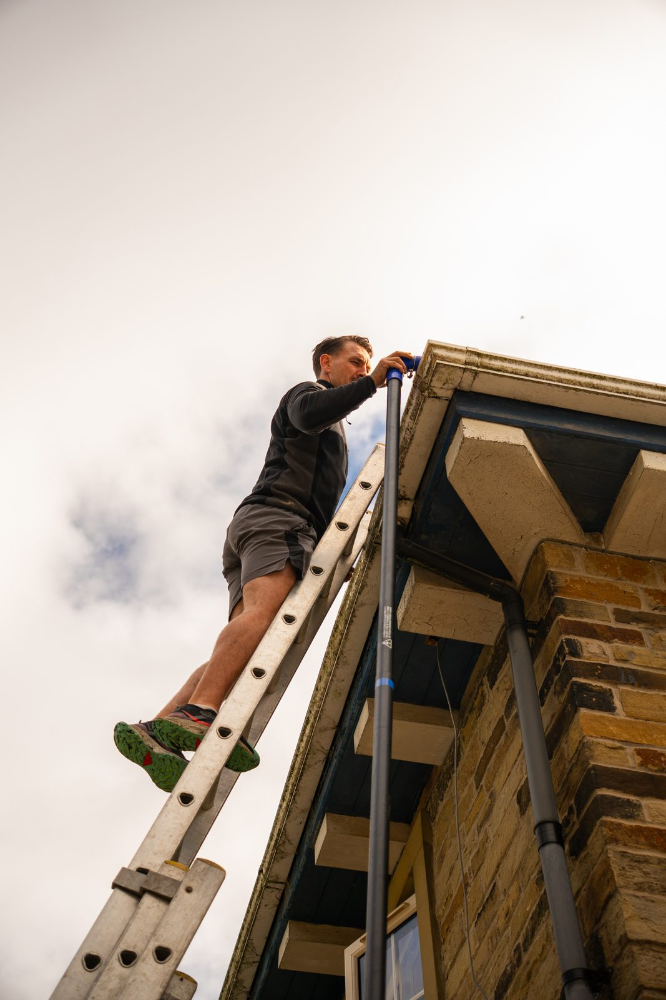
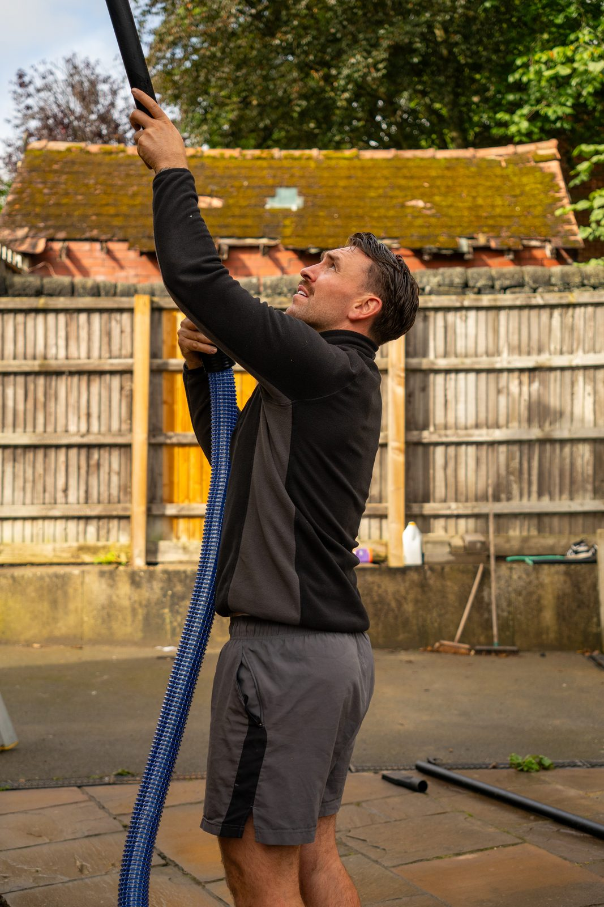
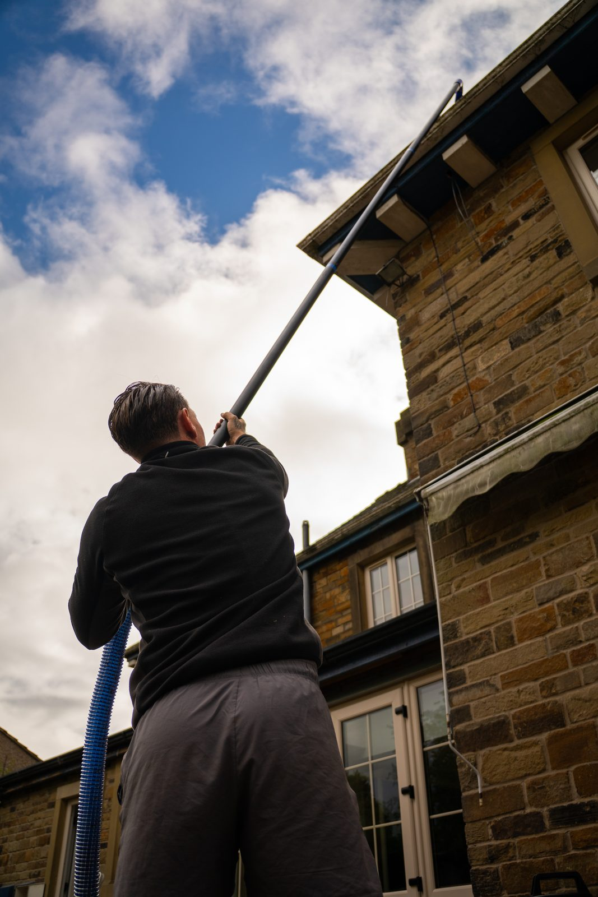
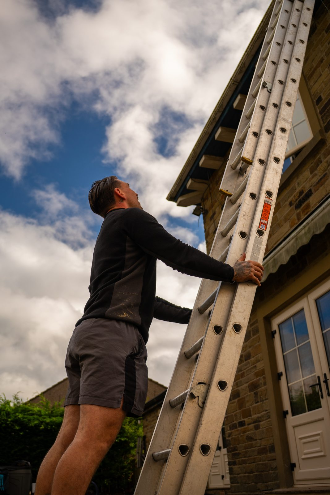

Streak-free windows.
Spotless UPVC.
Gutters that work.
Owner-run window and exterior cleaning for homes and businesses in Halifax and across Calderdale. We use purified water that dries without spots, and we turn up when we say we will.

Everything on the outside of your property
Window cleaning
Frames, sills and glass every visit. Homes on a regular round, or shops and offices on a schedule that suits trading hours.
Learn more →UPVC cleaning
Fascias, soffits, doors, conservatory roofs and frames brought back to white without harsh chemicals.
Learn more →Gutter cleaning
Moss, leaves and silt cleared with a vacuum pole, with a check of the run before and after so you can see the result.
Learn more →Jet washing
Driveways, patios, paths and decking pressure-washed to lift grime, algae and weeds between the slabs.
Learn more →
Why pure water beats a bucket and ladder
Tap water leaves the white spots. Our van filters it to near-zero purity so glass dries clear with nothing left behind.
The soft brush scrubs the frame, the sill and the glass, then rinses. Dirt goes, and no chemicals stay on your plants or paintwork.
Carbon-fibre poles reach high windows, conservatory roofs and gutters without anyone on your roof.
Out on the job around Calderdale






A local business you can actually get hold of
Northern External Cleaning Co is run by George from Halifax. You deal with the same person who quotes, cleans and answers the phone, and if something is not right you tell him directly and he sorts it.
Halifax and across Calderdale. Not sure if we cover you? Send your postcode on WhatsApp and we will tell you straight away.
Get a free, no-obligation quote
Send a photo of the house or shop and your postcode, and you will get a price back the same day. Or just ring.